Benchmark Experiments
Source:vignettes/tutorial/benchmark_experiments.Rmd
benchmark_experiments.RmdIn a benchmark experiment different learning methods are applied to one or several data sets with the aim to compare and rank the algorithms with respect to one or more performance measures.
In mlr a benchmark experiment can be conducted by calling function benchmark() on a base::list() of makeLearner()s and a base::list() of Task()s. benchmark() basically executes resample() for each combination of makeLearner() and Task(). You can specify an individual resampling strategy for each Task() and select one or multiple performance measures to be calculated.
Conducting benchmark experiments
We start with a small example. Two learners, MASS::lda() and a rpart::rpart(), are applied to one classification problem (sonar.task()). As resampling strategy we choose "Holdout". The performance is thus calculated on a single randomly sampled test data set.
In the example below we create a resample description (makeResampleDesc()), which is automatically instantiated by benchmark(). The instantiation is done only once per Task(), i.e., the same training and test sets are used for all learners. It is also possible to directly pass a makeResampleInstance().
If you would like to use a fixed test data set instead of a randomly selected one, you can create a suitable makeResampleInstance() through function makeFixedHoldoutInstance().
# Two learners to be compared
lrns = list(makeLearner("classif.lda"), makeLearner("classif.rpart"))
# Choose the resampling strategy
rdesc = makeResampleDesc("Holdout")
# Conduct the benchmark experiment
bmr = benchmark(lrns, sonar.task, rdesc)
## Task: Sonar-example, Learner: classif.lda
## Resampling: holdout
## Measures: mmce
## [Resample] iter 1: 0.3142857
##
## Aggregated Result: mmce.test.mean=0.3142857
##
## Task: Sonar-example, Learner: classif.rpart
## Resampling: holdout
## Measures: mmce
## [Resample] iter 1: 0.3285714
##
## Aggregated Result: mmce.test.mean=0.3285714
##
bmr
## task.id learner.id mmce.test.mean
## 1 Sonar-example classif.lda 0.3142857
## 2 Sonar-example classif.rpart 0.3285714For convenience, if you don’t want to pass any additional arguments to makeLearner(), you don’t need to generate the makeLearner()s explicitly, but it’s sufficient to provide the learner name. In the above example we could also have written:
# Vector of strings
lrns = c("classif.lda", "classif.rpart")
# A mixed list of Learner objects and strings works, too
lrns = list(makeLearner("classif.lda", predict.type = "prob"), "classif.rpart")
bmr = benchmark(lrns, sonar.task, rdesc, models = TRUE)
## Task: Sonar-example, Learner: classif.lda
## Resampling: holdout
## Measures: mmce
## [Resample] iter 1: 0.3285714
##
## Aggregated Result: mmce.test.mean=0.3285714
##
## Task: Sonar-example, Learner: classif.rpart
## Resampling: holdout
## Measures: mmce
## [Resample] iter 1: 0.3714286
##
## Aggregated Result: mmce.test.mean=0.3714286
##
bmr
## task.id learner.id mmce.test.mean
## 1 Sonar-example classif.lda 0.3285714
## 2 Sonar-example classif.rpart 0.3714286We also need to set models = TRUE explicitly if we want to take a look at them later. By default, models are not stored in the benchmark result object.
In the printed summary table every row corresponds to one pair of Task() and makeLearner(). The entries show the mean misclassification error, the default performance measure for classification, on the test data set.
The result bmr is an object of class BenchmarkResult(). Basically, it contains a base::list() of lists of ResampleResult() objects, first ordered by Task() and then by makeLearner().
Making experiments reproducible
Typically, we would want our experiment results to be reproducible. mlr obeys the set.seed function, so make sure to use set.seed at the beginning of your script if you would like your results to be reproducible.
Note that if you are using parallel computing, you may need to adjust how you call set.seed depending on your usecase. One possibility is to use set.seed(123, "L'Ecuyer") in order to ensure the results are reproducible for each child process. See the examples in parallel::mclapply() for more information on reproducibility and parallel computing.
Accessing benchmark results
mlr provides several accessor functions, named getBMR<WhatToExtract>, that permit to retrieve information for further analyses. This includes for example the performances or predictions of the learning algorithms under consideration.
Learner performances
Let’s have a look at the benchmark result above. getBMRPerformances() returns individual performances in resampling runs, while getBMRAggrPerformances() gives the aggregated values.
getBMRPerformances(bmr)
## $`Sonar-example`
## $`Sonar-example`$classif.lda
## iter mmce
## 1 1 0.3285714
##
## $`Sonar-example`$classif.rpart
## iter mmce
## 1 1 0.3714286
getBMRAggrPerformances(bmr)
## $`Sonar-example`
## $`Sonar-example`$classif.lda
## mmce.test.mean
## 0.3285714
##
## $`Sonar-example`$classif.rpart
## mmce.test.mean
## 0.3714286Since we used holdout as resampling strategy, individual and aggregated performance values coincide.
By default, nearly all “getter” functions return a nested base::list(), with the first level indicating the task and the second level indicating the learner. If only a single learner or, as in our case a single task is considered, setting drop = TRUE simplifies the result to a flat base::list().
getBMRPerformances(bmr, drop = TRUE)
## $classif.lda
## iter mmce
## 1 1 0.3285714
##
## $classif.rpart
## iter mmce
## 1 1 0.3714286Often it is more convenient to work with base::data.frame()s. You can easily convert the result structure by setting as.df = TRUE.
getBMRPerformances(bmr, as.df = TRUE)
## task.id learner.id iter mmce
## 1 Sonar-example classif.lda 1 0.3285714
## 2 Sonar-example classif.rpart 1 0.3714286
getBMRAggrPerformances(bmr, as.df = TRUE)
## task.id learner.id mmce.test.mean
## 1 Sonar-example classif.lda 0.3285714
## 2 Sonar-example classif.rpart 0.3714286Predictions
Per default, the BenchmarkResult() contains the learner predictions. If you do not want to keep them, e.g., to conserve memory, set keep.pred = FALSE when calling benchmark().
You can access the predictions using function getBMRPredictions(). Per default, you get a nested base::list() of ResamplePrediction()objects. As above, you can use the drop or as.df options to simplify the result.
getBMRPredictions(bmr)
head(getBMRPredictions(bmr, as.df = TRUE))
getBMRPredictions(bmr)
## $`Sonar-example`
## $`Sonar-example`$classif.lda
## Resampled Prediction for:
## Resample description: holdout with 0.67 split rate.
## Predict: test
## Stratification: FALSE
## predict.type: prob
## threshold: M=0.50,R=0.50
## time (mean): 0.00
## id truth prob.M prob.R response iter set
## 1 194 M 0.001914379 9.980856e-01 R 1 test
## 2 18 R 0.474564117 5.254359e-01 R 1 test
## 3 196 M 0.996712551 3.287449e-03 M 1 test
## 4 10 R 0.001307244 9.986928e-01 R 1 test
## 5 134 M 0.999999755 2.445735e-07 M 1 test
## 6 34 R 0.999761364 2.386361e-04 M 1 test
## ... (#rows: 70, #cols: 7)
##
## $`Sonar-example`$classif.rpart
## Resampled Prediction for:
## Resample description: holdout with 0.67 split rate.
## Predict: test
## Stratification: FALSE
## predict.type: response
## threshold:
## time (mean): 0.00
## id truth response iter set
## 1 194 M M 1 test
## 2 18 R R 1 test
## 3 196 M M 1 test
## 4 10 R R 1 test
## 5 134 M M 1 test
## 6 34 R M 1 test
## ... (#rows: 70, #cols: 5)
head(getBMRPredictions(bmr, as.df = TRUE))
## task.id learner.id id truth prob.M prob.R response
## 1 Sonar-example classif.lda 194 M 0.001914379 9.980856e-01 R
## 2 Sonar-example classif.lda 18 R 0.474564117 5.254359e-01 R
## 3 Sonar-example classif.lda 196 M 0.996712551 3.287449e-03 M
## 4 Sonar-example classif.lda 10 R 0.001307244 9.986928e-01 R
## 5 Sonar-example classif.lda 134 M 0.999999755 2.445735e-07 M
## 6 Sonar-example classif.lda 34 R 0.999761364 2.386361e-04 M
## iter set
## 1 1 test
## 2 1 test
## 3 1 test
## 4 1 test
## 5 1 test
## 6 1 testIt is also easily possible to access results for certain learners or tasks via their IDs. For this purpose many “getter” functions have a learner.ids and a task.ids argument.
head(getBMRPredictions(bmr, learner.ids = "classif.rpart", as.df = TRUE))
## task.id learner.id id truth response iter set
## 1 Sonar-example classif.rpart 112 M R 1 test
## 2 Sonar-example classif.rpart 191 M M 1 test
## 3 Sonar-example classif.rpart 208 M M 1 test
## 4 Sonar-example classif.rpart 203 M M 1 test
## 5 Sonar-example classif.rpart 23 R M 1 test
## 6 Sonar-example classif.rpart 162 M M 1 testIf you don’t like the default IDs, you can set the IDs of learners and tasks via the id option of makeLearner() and makeTask(). Moreover, you can conveniently change the ID of a makeLearner() via function setLearnerid().
IDs
The IDs of all makeLearner()s, Task()s and Measure’s (makeMeasure()) in a benchmark experiment can be retrieved as follows:
getBMRTaskIds(bmr)
## [1] "Sonar-example"
getBMRLearnerIds(bmr)
## [1] "classif.lda" "classif.rpart"
getBMRMeasureIds(bmr)
## [1] "mmce"Fitted models
By default the BenchmarkResult() does not contain the fitted models for all learners on all tasks. Since we used models = TRUE when calling benchmark(), we can also inspect the created models. The fitted models can be retrieved by function getBMRModels(). It returns a (possibly nested) base::list() of WrappedModel (makeWrappedModel()) objects.
getBMRModels(bmr)
## $`Sonar-example`
## $`Sonar-example`$classif.lda
## $`Sonar-example`$classif.lda[[1]]
## Model for learner.id=classif.lda; learner.class=classif.lda
## Trained on: task.id = Sonar-example; obs = 138; features = 60
## Hyperparameters:
##
##
## $`Sonar-example`$classif.rpart
## $`Sonar-example`$classif.rpart[[1]]
## Model for learner.id=classif.rpart; learner.class=classif.rpart
## Trained on: task.id = Sonar-example; obs = 138; features = 60
## Hyperparameters: xval=0
getBMRModels(bmr, drop = TRUE)
## $classif.lda
## $classif.lda[[1]]
## Model for learner.id=classif.lda; learner.class=classif.lda
## Trained on: task.id = Sonar-example; obs = 138; features = 60
## Hyperparameters:
##
##
## $classif.rpart
## $classif.rpart[[1]]
## Model for learner.id=classif.rpart; learner.class=classif.rpart
## Trained on: task.id = Sonar-example; obs = 138; features = 60
## Hyperparameters: xval=0
getBMRModels(bmr, learner.ids = "classif.lda")
## $`Sonar-example`
## $`Sonar-example`$classif.lda
## $`Sonar-example`$classif.lda[[1]]
## Model for learner.id=classif.lda; learner.class=classif.lda
## Trained on: task.id = Sonar-example; obs = 138; features = 60
## Hyperparameters:Learners and measures
Moreover, you can extract the employed makeLearner()s and Measure’s (makeMeasure()).
getBMRLearners(bmr)
## $classif.lda
## Learner classif.lda from package MASS
## Type: classif
## Name: Linear Discriminant Analysis; Short name: lda
## Class: classif.lda
## Properties: twoclass,multiclass,numerics,factors,prob
## Predict-Type: prob
## Hyperparameters:
##
##
## $classif.rpart
## Learner classif.rpart from package rpart
## Type: classif
## Name: Decision Tree; Short name: rpart
## Class: classif.rpart
## Properties: twoclass,multiclass,missings,numerics,factors,ordered,prob,weights,featimp
## Predict-Type: response
## Hyperparameters: xval=0
getBMRMeasures(bmr)
## [[1]]
## Name: Mean misclassification error
## Performance measure: mmce
## Properties: classif,classif.multi,req.pred,req.truth
## Minimize: TRUE
## Best: 0; Worst: 1
## Aggregated by: test.mean
## Arguments: list()
## Note: Defined as: mean(response != truth)Merging benchmark results
Sometimes after completing a benchmark experiment it turns out that you want to extend it by another makeLearner() or another Task(). In this case you can perform an additional benchmark experiment and then use function mergeBenchmarkResults() to combine the results to a single BenchmarkResult() object that can be accessed and analyzed as usual.
For example in the benchmark experiment above we applied MASS::lda() and rpart::rpart() to the sonar.task(). We now perform a second experiment using a randomForest::randomForest() and quadratic discriminant analysis MASS::qda() and merge the results.
# First benchmark result
bmr
## task.id learner.id mmce.test.mean
## 1 Sonar-example classif.lda 0.3285714
## 2 Sonar-example classif.rpart 0.3714286
# Benchmark experiment for the additional learners
lrns2 = list(makeLearner("classif.randomForest"), makeLearner("classif.qda"))
bmr2 = benchmark(lrns2, sonar.task, rdesc, show.info = FALSE)
bmr2
## task.id learner.id mmce.test.mean
## 1 Sonar-example classif.randomForest 0.1285714
## 2 Sonar-example classif.qda 0.4000000
# Merge the results
mergeBenchmarkResults(list(bmr, bmr2))
## task.id learner.id mmce.test.mean
## 1 Sonar-example classif.lda 0.3285714
## 2 Sonar-example classif.rpart 0.3714286
## 3 Sonar-example classif.randomForest 0.1285714
## 4 Sonar-example classif.qda 0.4000000Note that in the above examples in each case a resample description (makeResampleDesc()) was passed to the benchmark() function. For this reason MASS::lda() and rpart::rpart() were most likely evaluated on a different training/test set pair than randomForest::randomForest() and MASS::qda().
Differing training/test set pairs across learners pose an additional source of variation in the results, which can make it harder to detect actual performance differences between learners. Therefore, if you suspect that you will have to extend your benchmark experiment by another makeLearner() later on it’s probably easiest to work with makeResampleInstance()s from the start. These can be stored and used for any additional experiments.
Alternatively, if you used a resample description in the first benchmark experiment you could also extract the makeResampleInstance()s from the BenchmarkResult() bmr and pass these to all further benchmark() calls.
rin = getBMRPredictions(bmr)[[1]][[1]]$instance
rin
## Resample instance for 208 cases.
## Resample description: holdout with 0.67 split rate.
## Predict: test
## Stratification: FALSE
# Benchmark experiment for the additional random forest
bmr3 = benchmark(lrns2, sonar.task, rin, show.info = FALSE)
bmr3
## task.id learner.id mmce.test.mean
## 1 Sonar-example classif.randomForest 0.1428571
## 2 Sonar-example classif.qda 0.3285714
# Merge the results
mergeBenchmarkResults(list(bmr, bmr3))
## task.id learner.id mmce.test.mean
## 1 Sonar-example classif.lda 0.3285714
## 2 Sonar-example classif.rpart 0.3714286
## 3 Sonar-example classif.randomForest 0.1428571
## 4 Sonar-example classif.qda 0.3285714Benchmark analysis and visualization
mlr offers several ways to analyze the results of a benchmark experiment. This includes visualization, ranking of learning algorithms and hypothesis tests to assess performance differences between learners.
In order to demonstrate the functionality we conduct a slightly larger benchmark experiment with three learning algorithms that are applied to five classification tasks.
Example: Comparing lda, rpart and random Forest
We consider MASS::lda(), classification trees rpart::rpart(), and random forests randomForest::randomForest(). Since the default learner IDs are a little long, we choose shorter names in the R code below.
We use five classification tasks. Three are already provided by mlr, two more data sets are taken from package mlbench::mlbench() and converted to Task()s by function convertMLBenchObjToTask().
For all tasks 10-fold cross-validation is chosen as resampling strategy. This is achieved by passing a single resample description (makeResampleDesc()) to benchmark(), which is then instantiated automatically once for each Task(). This way, the same instance is used for all learners applied to a single task.
It is also possible to choose a different resampling strategy for each Task() by passing a base::list() of the same length as the number of tasks that can contain both resample descriptions (makeResampleDesc()) and resample instances (makeResampleInstance()).
We use the mean misclassification error mmce as primary performance measure, but also calculate the balanced error rate ber and the training time timetrain.
## Loading required package: mlbench
# Create a list of learners
lrns = list(
makeLearner("classif.lda", id = "lda"),
makeLearner("classif.rpart", id = "rpart"),
makeLearner("classif.randomForest", id = "randomForest")
)
# Get additional Tasks from package mlbench
ring.task = convertMLBenchObjToTask("mlbench.ringnorm", n = 600)
wave.task = convertMLBenchObjToTask("mlbench.waveform", n = 600)
tasks = list(iris.task, sonar.task, pid.task, ring.task, wave.task)
rdesc = makeResampleDesc("CV", iters = 10)
meas = list(mmce, ber, timetrain)
bmr = benchmark(lrns, tasks, rdesc, meas, show.info = FALSE)
## task.id learner.id mmce.test.mean ber.test.mean
## 1 iris-example lda 0.02000000 0.02222222
## 2 iris-example rpart 0.08000000 0.07555556
## 3 iris-example randomForest 0.05333333 0.05250000
## 4 mlbench.ringnorm lda 0.35000000 0.34605671
## 5 mlbench.ringnorm rpart 0.17333333 0.17313632
## 6 mlbench.ringnorm randomForest 0.05666667 0.05724405
## 7 mlbench.waveform lda 0.19000000 0.18257244
## 8 mlbench.waveform rpart 0.28833333 0.28765247
## 9 mlbench.waveform randomForest 0.17500000 0.17418440
## 10 PimaIndiansDiabetes-example lda 0.22778537 0.27148893
## 11 PimaIndiansDiabetes-example rpart 0.25133288 0.28967870
## 12 PimaIndiansDiabetes-example randomForest 0.23427888 0.27464510
## 13 Sonar-example lda 0.24619048 0.23986694
## 14 Sonar-example rpart 0.30785714 0.31153361
## 15 Sonar-example randomForest 0.18738095 0.18359363
## timetrain.test.mean
## 1 0.0039
## 2 0.0048
## 3 0.0330
## 4 0.0092
## 5 0.0116
## 6 0.3548
## 7 0.0084
## 8 0.0100
## 9 0.3675
## 10 0.0424
## 11 0.0066
## 12 0.4108
## 13 0.0147
## 14 0.0128
## 15 0.2335From the aggregated performance values we can see that for the iris- and PimaIndiansDiabetes-example linear discriminant analysis (MASS::lda()) performs well while for all other tasks the randomForest::randomForest() seems superior. Training takes longer for the randomForest::randomForest() than for the other learners.
In order to draw any conclusions from the average performances at least their variability has to be taken into account or, preferably, the distribution of performance values across resampling iterations.
The individual performances on the 10 folds for every task, learner, and measure are retrieved below.
perf = getBMRPerformances(bmr, as.df = TRUE)
head(perf[, -ncol(perf)])
## task.id learner.id iter mmce ber
## 1 iris-example lda 1 0.06666667 0.05555556
## 2 iris-example lda 2 0.00000000 0.00000000
## 3 iris-example lda 3 0.06666667 0.04761905
## 4 iris-example lda 4 0.00000000 0.00000000
## 5 iris-example lda 5 0.06666667 0.04166667
## 6 iris-example lda 6 0.00000000 0.00000000A closer look at the result reveals that the randomForest::randomForest() outperforms the classification tree (rpart::rpart()) in every instance, while linear discriminant analysis (MASS::lda()) performs better than rpart::rpart() most of the time. Additionally MASS::lda() sometimes even beats the randomForest::randomForest(). With increasing size of such benchmark() experiments, those tables become almost unreadable and hard to comprehend.
mlr features some plotting functions to visualize results of benchmark experiments that you might find useful. Moreover, mlr offers statistical hypothesis tests to assess performance differences between learners.
Integrated plots
Plots are generated using ggplot2::ggplot2(). Further customization, such as renaming plot elements or changing colors, is easily possible.
Visualizing performances
plotBMRBoxplots() creates box or violin plots which show the distribution of performance values across resampling iterations for one performance measure and for all learners and tasks (and thus visualize the output of getBMRPerformances()).
Below are both variants, box and violin plots. The first plot shows the mmce and the second plot the ber. Moreover, in the second plot we color the boxes according to the learner.ids.
plotBMRBoxplots(bmr, measure = mmce, order.lrn = getBMRLearnerIds(bmr))
plotBMRBoxplots(bmr,
measure = ber, style = "violin", pretty.names = FALSE,
order.lrn = getBMRLearnerIds(bmr)) +
aes(color = learner.id) +
theme(strip.text.x = element_text(size = 8))
## Warning: `fun.y` is deprecated. Use `fun` instead.
## Warning: `fun.ymin` is deprecated. Use `fun.min` instead.
## Warning: `fun.ymax` is deprecated. Use `fun.max` instead.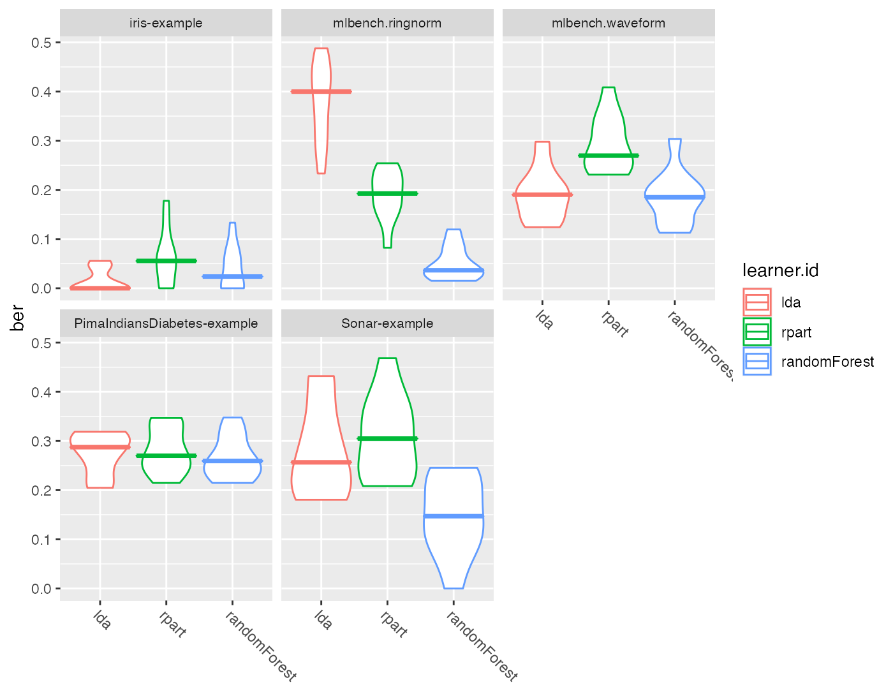
Note that by default the measure names and the learner short.names are used as axis labels.
mmce$name
## [1] "Mean misclassification error"
mmce$id
## [1] "mmce"
getBMRLearnerIds(bmr)
## [1] "lda" "rpart" "randomForest"
getBMRLearnerShortNames(bmr)
## [1] "lda" "rpart" "rf"If you prefer the ids like, e.g., mmce and ber set pretty.names = FALSE (as done for the second plot). Of course you can also use the ggplot2::ggplot2() functionality like the ggplot2::labs() function to choose completely different labels.
One question which comes up quite often is how to change the panel headers (which default to the Task() IDs) and the learner names on the x-axis. For example looking at the above plots we would like to remove the “example” suffixes and the “mlbench” prefixes from the panel headers. Moreover, we want uppercase learner labels. Currently, the probably simplest solution is to change the factor levels of the plotted data as shown below.
plt = plotBMRBoxplots(bmr, measure = mmce, order.lrn = getBMRLearnerIds(bmr))
head(plt$data[, -ncol(plt$data)])
## task.id learner.id iter mmce ber
## 1 iris-example lda 1 0.06666667 0.05555556
## 2 iris-example lda 2 0.00000000 0.00000000
## 3 iris-example lda 3 0.06666667 0.04761905
## 4 iris-example lda 4 0.00000000 0.00000000
## 5 iris-example lda 5 0.06666667 0.04166667
## 6 iris-example lda 6 0.00000000 0.00000000
levels(plt$data$task.id) = c("Iris", "Ringnorm", "Waveform", "Diabetes", "Sonar")
levels(plt$data$learner.id) = c("LDA", "CART", "RF")
plt + ylab("Error rate")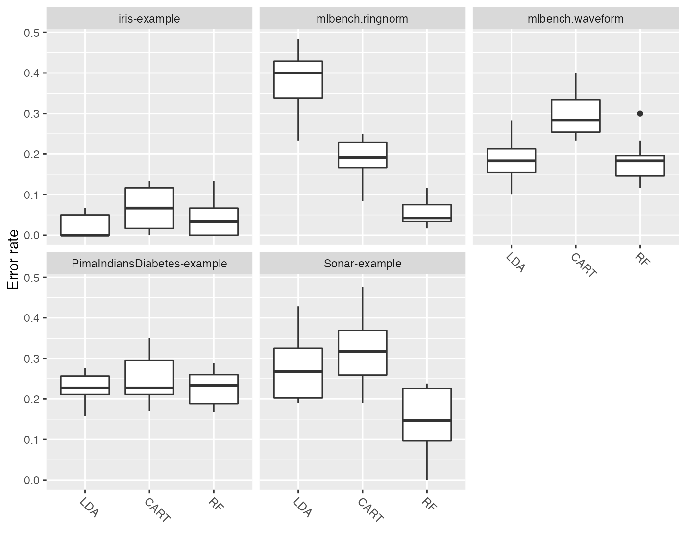
Visualizing aggregated performances
The aggregated performance values (resulting from getBMRAggrPerformances()) can be visualized by function plotBMRSummary(). This plot draws one line for each task on which the aggregated values of one performance measure for all learners are displayed. By default, the first measure in the base::list() of Measure’s (makeMeasure()) passed to benchmark() is used, in our example mmce. Moreover, a small vertical jitter is added to prevent overplotting.
plotBMRSummary(bmr)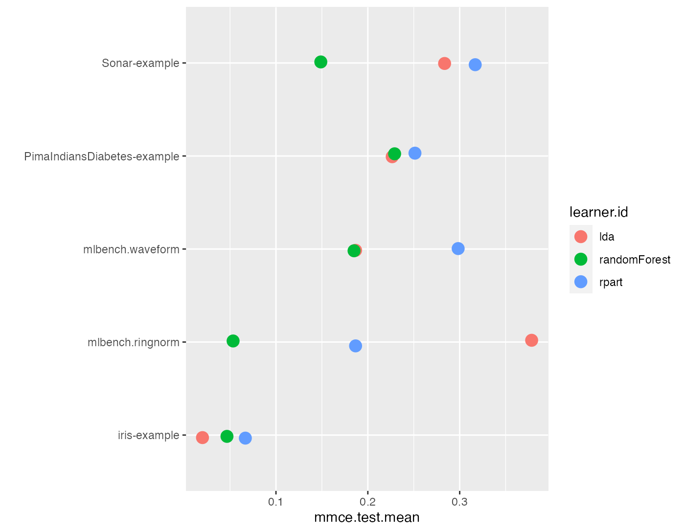
Calculating and visualizing ranks
Additional to the absolute performance, relative performance, i.e., ranking the learners is usually of interest and might provide valuable additional insight.
Function convertBMRToRankMatrix() calculates ranks based on aggregated learner performances of one measure. We choose the mean misclassification error. The rank structure can be visualized by plotBMRRanksAsBarChart().
m = convertBMRToRankMatrix(bmr, mmce)
m
## PimaIndiansDiabetes-example Sonar-example iris-example
## lda 1 2 1
## randomForest 2 1 2
## rpart 3 3 3
## mlbench.ringnorm mlbench.waveform
## lda 3 2
## randomForest 1 1
## rpart 2 3Methods with best performance, i.e., with lowest mmce, are assigned the lowest rank. Linear discriminant analysis (MASS::lda()) is best for the iris and PimaIndiansDiabetes-examples while the randomForest::randomForest() shows best results on the remaining tasks.
plotBMRRanksAsBarChart() with option pos = "tile" shows a corresponding heat map. The ranks are displayed on the x-axis and the learners are color-coded.
plotBMRRanksAsBarChart(bmr, pos = "tile", order.lrn = getBMRLearnerIds(bmr))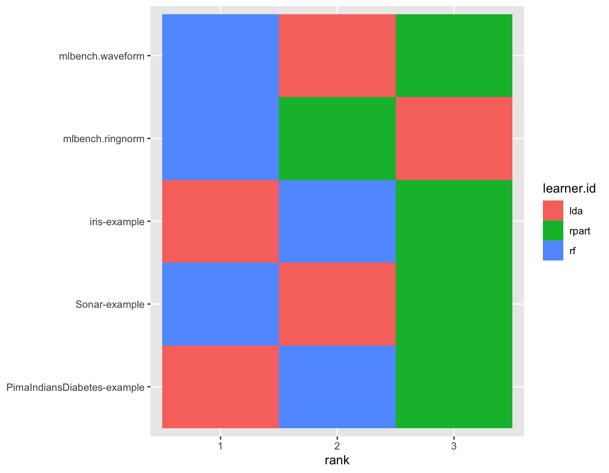
A similar plot can also be obtained via plotBMRSummary(). With option trafo = "rank" the ranks are displayed instead of the aggregated performances.
plotBMRSummary(bmr, trafo = "rank", jitter = 0)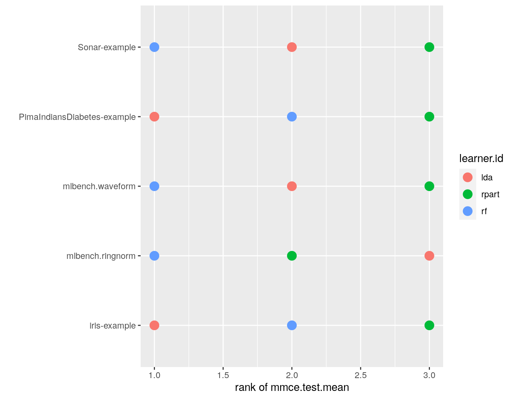
Alternatively, you can draw stacked bar charts (the default) or bar charts with juxtaposed bars (pos = "dodge") that are better suited to compare the frequencies of learners within and across ranks.
plotBMRRanksAsBarChart(bmr, order.lrn = getBMRLearnerIds(bmr))
plotBMRRanksAsBarChart(bmr, pos = "dodge", order.lrn = getBMRLearnerIds(bmr))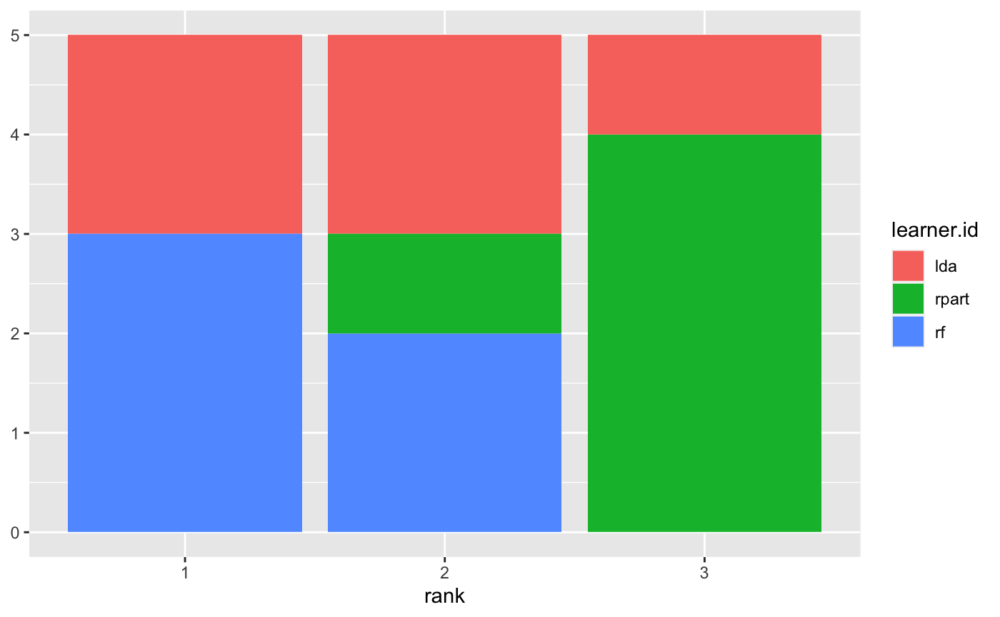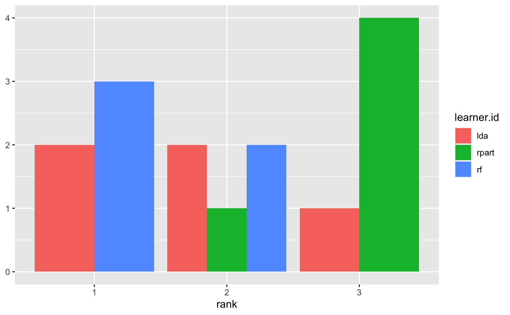
Comparing learners using hypothesis tests
Many researchers feel the need to display an algorithm’s superiority by employing some sort of hypothesis testing. As non-parametric tests seem better suited for such benchmark results the tests provided in mlr are the Overall Friedman test and the Friedman-Nemenyi post hoc test.
While the ad hoc friedmanTestBMR() based on stats::friedman.test() is testing the hypothesis whether there is a significant difference between the employed learners, the post hoc friedmanPostHocTestBMR() tests for significant differences between all pairs of learners. Non parametric tests often do have less power then their parametric counterparts but less assumptions about underlying distributions have to be made. This often means many data sets are needed in order to be able to show significant differences at reasonable significance levels.
In our example, we want to compare the three learners on the selected data sets. First we might we want to test the hypothesis whether there is a difference between the learners.
friedmanTestBMR(bmr)
##
## Friedman rank sum test
##
## data: mmce.test.mean and learner.id and task.id
## Friedman chi-squared = 5.2, df = 2, p-value = 0.07427In order to keep the computation time for this tutorial small, the makeLearner()s are only evaluated on five tasks. This also means that we operate on a relatively low significance level \(\alpha = 0.1\). As we can reject the null hypothesis of the Friedman test at a reasonable significance level we might now want to test where these differences lie exactly.
friedmanPostHocTestBMR(bmr, p.value = 0.1)
## lda randomForest
## randomForest 0.802 -
## rpart 0.254 0.069At this level of significance, we can reject the null hypothesis that there exists no performance difference between the decision tree (rpart::rpart()) and the randomForest::randomForest().
Critical differences diagram
In order to visualize differently performing learners, a critical differences diagramcan be plotted, using either the Nemenyi test (test = "nemenyi") or the Bonferroni-Dunn test (test = "bd").
The mean rank of learners is displayed on the x-axis.
- Choosing
test = "nemenyi"compares all pairs ofmakeLearner()s to each other, thus the output are groups of not significantly different learners. The diagram connects all groups of learners where the mean ranks do not differ by more than the critical differences. Learners that are not connected by a bar are significantly different, and the learner(s) with the lower mean rank can be considered “better” at the chosen significance level. - Choosing
test = "bd"performs a pairwise comparison with a baseline. An interval which extends by the given critical difference in both directions is drawn around themakeLearner()chosen as baseline, though only comparisons with the baseline are possible. All learners within the interval are not significantly different, while the baseline can be considered better or worse than a given learner which is outside of the interval.
The critical difference \(\mathit{CD}\) is calculated by \[\mathit{CD} = q_\alpha \cdot \sqrt{\frac{k(k+1)}{6N}},\] where \(N\) denotes the number of tasks, \(k\) is the number of learners, and \(q_\alpha\) comes from the studentized range statistic divided by \(\sqrt{2}\). For details see Demsar (2006).
Function generateCritDifferencesData() does all necessary calculations while function plotCritDifferences() draws the plot. See the tutorial page about visualization for details on data generation and plotting functions.
# Nemenyi test
g = generateCritDifferencesData(bmr, p.value = 0.1, test = "nemenyi")
plotCritDifferences(g) + coord_cartesian(xlim = c(-1, 5), ylim = c(0, 2)) +
scale_colour_manual(values = c("lda" = "#F8766D", "rpart" = "#00BA38", "randomForest" = "#619CFF"))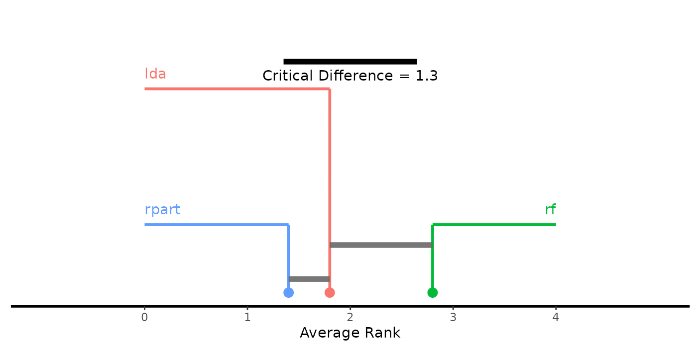
# Bonferroni-Dunn test
g = generateCritDifferencesData(bmr, p.value = 0.1, test = "bd", baseline = "randomForest")
plotCritDifferences(g) + coord_cartesian(xlim = c(-1, 5), ylim = c(0, 2)) +
scale_colour_manual(values = c("lda" = "#F8766D", "rpart" = "#00BA38", "randomForest" = "#619CFF"))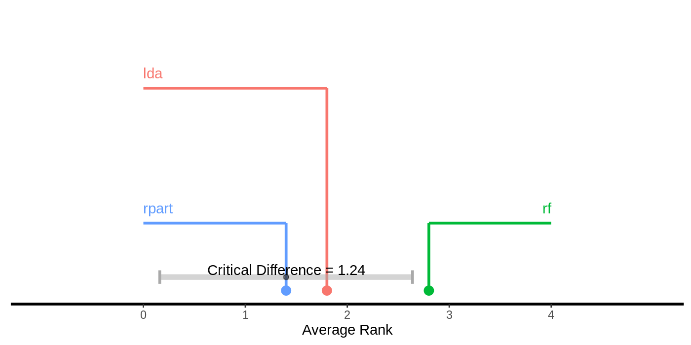
Custom plots
You can easily generate your own visualizations by customizing the ggplot2::ggplot() objects returned by the plots above, retrieve the data from the ggplot2::ggplot() objects and use them as basis for your own plots, or rely on the base::data.frame()s returned by getBMRPerformances() or getBMRAggrPerformances(). Here are some examples.
Instead of boxplots (as in plotBMRBoxplots()) we could create density plots to show the performance values resulting from individual resampling iterations.
perf = getBMRPerformances(bmr, as.df = TRUE)
# Density plots for two tasks
qplot(mmce,
colour = learner.id, facets = . ~ task.id,
data = perf[perf$task.id %in% c("iris-example", "Sonar-example"), ], geom = "density") +
theme(strip.text.x = element_text(size = 8))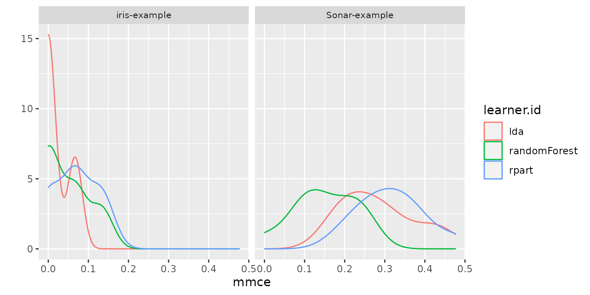
In order to plot multiple performance measures in parallel, perf is reshaped to long format. Below we generate grouped boxplots showing the error rate and the training time timetrain.
# Compare mmce and timetrain
df = reshape2::melt(perf, id.vars = c("task.id", "learner.id", "iter"))
df = df[df$variable != "ber", ]
head(df)
## task.id learner.id iter variable value
## 1 iris-example lda 1 mmce 0.06666667
## 2 iris-example lda 2 mmce 0.00000000
## 3 iris-example lda 3 mmce 0.06666667
## 4 iris-example lda 4 mmce 0.00000000
## 5 iris-example lda 5 mmce 0.06666667
## 6 iris-example lda 6 mmce 0.00000000
qplot(variable, value,
data = df, colour = learner.id, geom = "boxplot",
xlab = "measure", ylab = "performance") +
facet_wrap(~task.id, nrow = 2)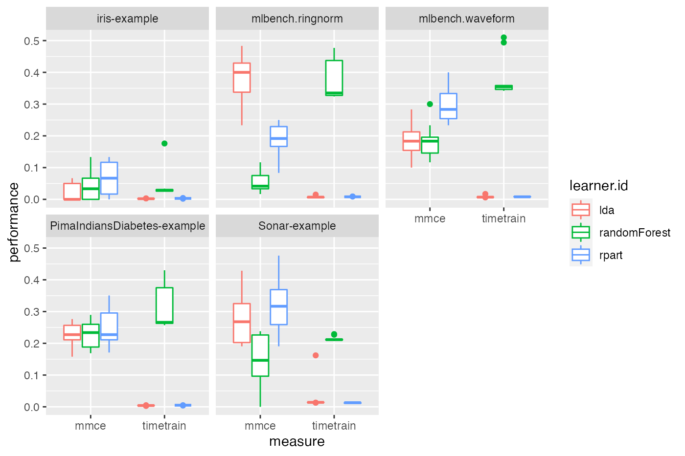
It might also be useful to assess if learner performances in single resampling iterations, i.e., in one fold, are related. This might help to gain further insight, for example by having a closer look at train and test sets from iterations where one learner performs exceptionally well while another one is fairly bad. Moreover, this might be useful for the construction of ensembles of learning algorithms. Below, function GGally::ggpairs() from package GGally::GGally() is used to generate a scatterplot matrix of mean misclassification errors on the mlbench::Sonar() data set.
perf = getBMRPerformances(bmr, task.id = "Sonar-example", as.df = TRUE)
df = reshape2::melt(perf, id.vars = c("task.id", "learner.id", "iter"))
df = df[df$variable == "mmce", ]
df = reshape2::dcast(df, task.id + iter ~ variable + learner.id)
head(df)
## task.id iter mmce_lda mmce_randomForest mmce_rpart
## 1 Sonar-example 1 0.4285714 0.2380952 0.2380952
## 2 Sonar-example 2 0.1904762 0.0952381 0.2857143
## 3 Sonar-example 3 0.3000000 0.1500000 0.3000000
## 4 Sonar-example 4 0.1904762 0.0000000 0.1904762
## 5 Sonar-example 5 0.3333333 0.2380952 0.4761905
## 6 Sonar-example 6 0.2500000 0.1000000 0.2500000
GGally::ggpairs(df, 3:5)
## Registered S3 method overwritten by 'GGally':
## method from
## +.gg ggplot2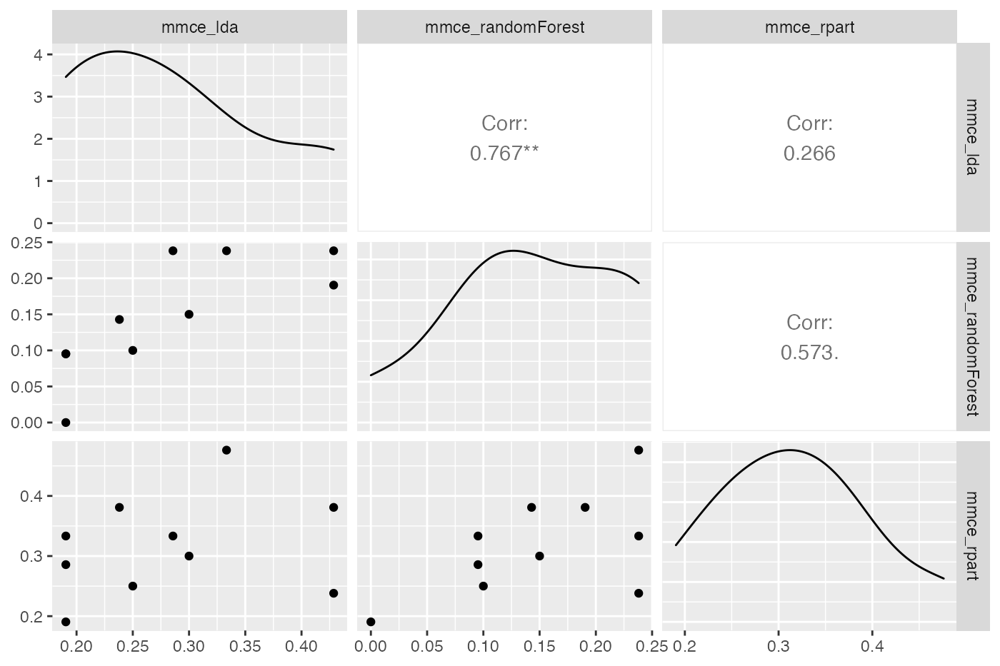
Further comments
- Note that for supervised classification
mlroffers some more plots that operate onBenchmarkResult()objects and allow you to compare the performance of learning algorithms. See for example the tutorial page on ROC analysis and functionsgenerateThreshVsPerfData(),plotROCCurves(), andplotViperCharts()as well as the page about classifier calibration and functiongenerateCalibrationData(). - In the examples shown in this section we applied “raw” learning algorithms, but often things are more complicated. At the very least, many learners have hyperparameters that need to be tuned to get sensible results. Reliable performance estimates can be obtained by nested resampling, i.e., by doing the tuning in an inner resampling loop while estimating the performance in an outer loop. Moreover, you might want to combine learners with pre-processing steps like imputation, scaling, outlier removal, dimensionality reduction or feature selection and so on. All this can be easily done using
mlr’s wrapper functionality. The general principle is explained in the section about wrapper in the Advanced part of this tutorial. There are also several sections devoted to common pre-processing steps. - Benchmark experiments can very quickly become computationally demanding.
mlroffers some possibilities for parallelization.